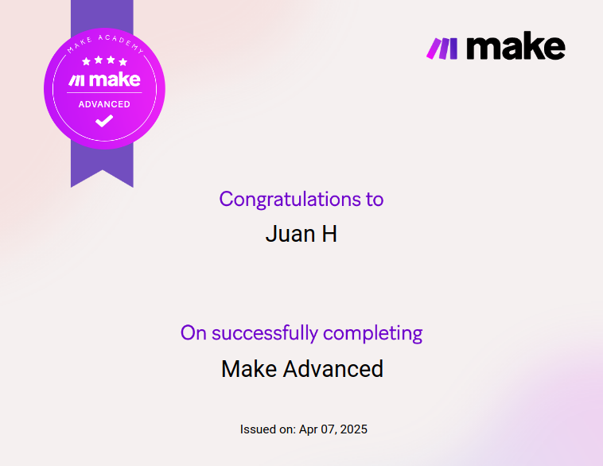
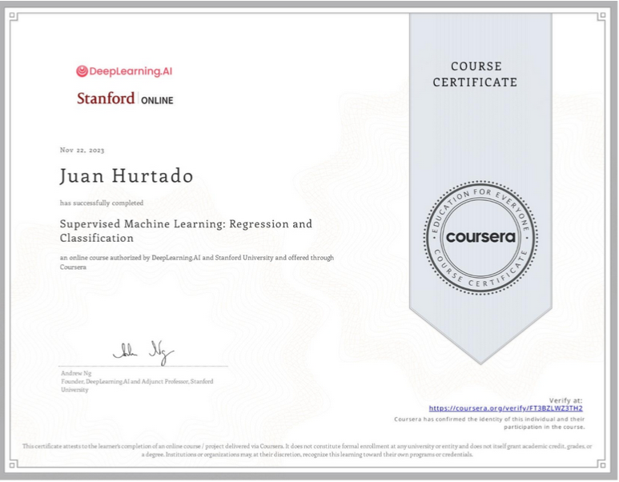
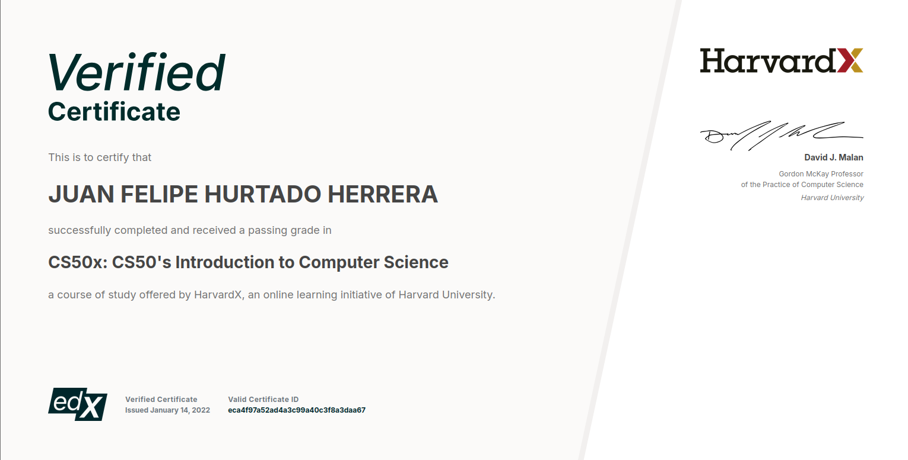
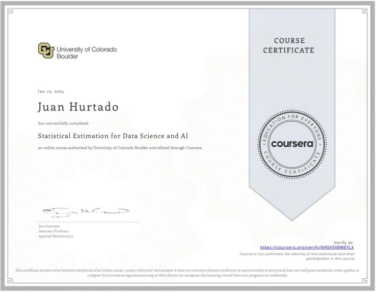
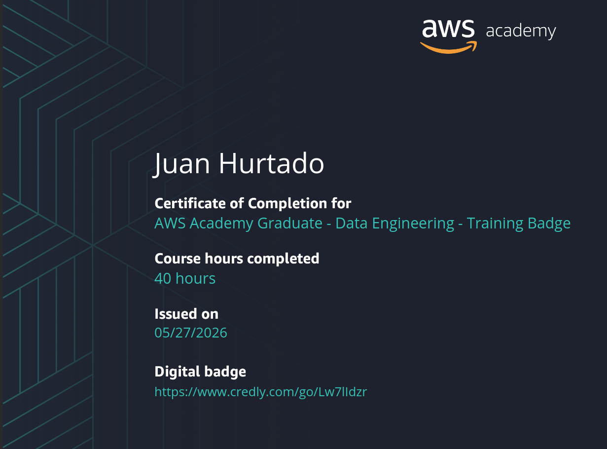

I build and run GoHighLevel systems for businesses that pay for leads: instant AI response, follow-up that does not stop, safe reactivation of old lists, and a pipeline you can trust.
Most businesses I work with already pay for leads. The loss happens after the form is filled.
The lead waits hours for a text. By then they talked to someone else.
Nobody sends the third or fourth message, which is where many replies come from.
Thousands of past contacts sit in the CRM while you buy new leads.
Stages, tags and fields grew by accident, so nobody knows what is actually closing.
Companies that tried to contact a web lead within an hour were nearly 7 times more likely to qualify it than those that waited one more hour. Harvard Business Review, "The Short Life of Online Sales Leads", 2011
Inside your GoHighLevel account, documented, with alerts when something fails.
An AI agent answers new leads from Meta, Google and your forms by SMS or WhatsApp, qualifies them and books the call.
Cadences that keep going until the lead books or says no, inside the lead's business hours, with replies routed to a person when it matters.
Old lists contacted in daily-capped batches with opt-out handling and delivery monitoring, so the account does not get restricted.
Pipelines, stages, custom fields and custom values, calendars, reminders and no-show handling.
AI callers in GoHighLevel and Retell for the leads that never answer a text.
I keep sub-accounts healthy for agencies and teams that need an operator, and I log every change.
Lead systems first. Client names left out on purpose.
Thousands of old contacts, a sub-account close to its carrier and opt-out limits, and no way to see what was failing.
Daily-capped batches, opt-out handling, error tags with requeue and delivery monitoring. When the account hit the daily opt-out limit, I traced it to follow-ups without an opt-out line and fixed them.
467 SMS delivered (93.6%) and 57 replies (12.2%) in one campaign. The next batch of 240 went out with 0 limit errors.
A list of realtors who had gone quiet, and a team with no time to text them one by one.
A campaign that sends about 50 personal openers a day from the right number, alerts the team the moment a realtor replies, and stops for anyone who opts out.
0 delivery failures, and 4 realtors asked for a call on the first day.
Leads from a Google Ads form, WhatsApp and Calendly got no fast first touch and no consistent follow-up.
An AI agent gives every lead a first touch, qualifies it and moves it through AI stages in the pipeline. A follow-up engine sends human-approved messages at 5, 7, 14 and 20 days, only inside the lead's local business hours.
Every lead in the pilot got a first touch from the AI agent, and the sales team sees who is talking and who went quiet in one place.
Google Ads optimized for form fills, not for the calls that actually happened.
A daily feed that sends booked and completed calls, matched by Google Click ID, back to Google Ads.
The feed is built and tested. Once it is switched on, ad spend can optimize for real sales conversations instead of form submissions.
Businesses add leads to their CRM and then someone has to manually follow up, check if they booked, send reminders, and brief the rep before the call. Four or five tasks that nobody automates.
Three GHL workflows chained together. Workflow 1: AI generates a personalized outreach email based on the contact's industry and sends it with a booking link. Workflow 2: when a call is booked, AI writes a lead briefing for the rep with likely pain points and suggested opening questions. Workflow 3: confirmation, 24h reminder, 1h reminder, and a post-call nudge if the rep forgets to update the pipeline.
New lead arrives, gets a personalized AI email, books a call, rep gets a briefing, prospect gets reminders, pipeline updates itself. Zero manual follow-up at any stage.
Support team spending 20-30 minutes per ticket searching through docs spread across Google Drive. Docs constantly updated, answers going stale.
Document indexing pipeline with recursive chunking and Pinecone for production-scale semantic retrieval. AI agent in Slack with conversation memory. Bot cites its source or says it doesn't know. No hallucination.
20-30 minutes per ticket down to under 10 seconds. Document updates picked up automatically on the next pipeline run. Zero manual knowledge base maintenance.
A social media SaaS running content for dozens of client accounts. Every new client meant opening n8n and editing workflows by hand. Per-client rules lived inside the automation, so the system got more fragile with every account they signed.
I moved the business logic out of the workflows and into Postgres. Tenant-scoped schema, RPCs for batch creation and slot assignment, and a scheduling engine that stays correct across daylight saving shifts. Assets land in Drive, a generic poller matches each file to its planned post, GPT-4o writes the caption, the client approves by email, and the batch gets slotted and published to Instagram and Facebook.
24 workflows live in production against a 14-table schema. Slot claiming is race-safe through an advisory lock plus a partial unique index, so duplicate runs claim nothing. The publishing rail fails closed: on any error the batch lands in a terminal state with a Slack alert instead of posting to the wrong account. Drive intake is idempotent, with a dedup table and two unique constraints on filename. A documented end-to-end audit found a comment monitor that had been failing silently for 23 consecutive runs and a dead publish callback, both now green.
Finding quality Upwork clients manually takes 2-3 hours a day. Reading postings, checking client history, writing proposals from scratch. Every single day.
4-stage Python pipeline: Apify scrapes jobs and pulls hidden client data (spend, hire rate, avg rating). A scoring engine 0-100 drops anything below 35 before I ever see it. Surviving jobs land in a local Kanban. Moving a card to review sends the full job + client data to Claude, which flags red/green signals and writes a tailored proposal referencing the specific tech stack.
2-3 hours of daily scouting down to 2 minutes of review. Built with modular Python, local SQLite, and a market intelligence layer that tracks which skills pay most that week.
Students split their attention between listening and taking notes, and end up doing neither well. Existing apps record audio but don't understand it.
Full Flutter app, one codebase for iOS and Android, with background audio recording, a Smart Notebook canvas, and Gemini processing the full class audio after. Automatic task detection, quiz generation, PDF export. The hard engineering problem: running audio capture and canvas rendering simultaneously without draining the battery.
Live on App Store and Google Play on a freemium model. Gemini returns full transcripts segmented into summary, glossary, highlights, and auto-extracted tasks from what the professor said.
The core tools behind every system above.
Also: Airtable, Zapier, Python, Supabase, custom API integrations.
Start small, prove it, then keep it running.
I review your lead sources, first-reply time, follow-up and pipeline, and send you a short video with the fixes in order of impact.
I build the instant response, the follow-up and the pipeline inside your GoHighLevel, test it with real leads and document it.
Weekly checks on delivery, replies and bookings, and changes as your offer or ads change.

Make Academy

DeepLearning.AI · Stanford

HarvardX

University of Colorado Boulder

AWS Academy
Most automation freelancers connect tools. I architect systems. Software development background, not Zapier tutorials.
With 7+ years of programming experience and 5+ years in automation, I build systems that scale beyond simple integrations. Whether it's custom Python logic, AI agents with RAG, or complex CRM pipelines, I deliver robust solutions.
I also build AI agents that do more than chat. Using MCP, they connect straight to your CRM, database, and internal tools, so the agent reads live data and takes real actions instead of guessing.
Fluent in English, Spanish & French. I specialize in long-term partnerships with agencies and SaaS companies.
A quick introduction to who I am and how I can help you.
Click below to invite me to a job. I'll show you exactly how to automate it with a clear plan.